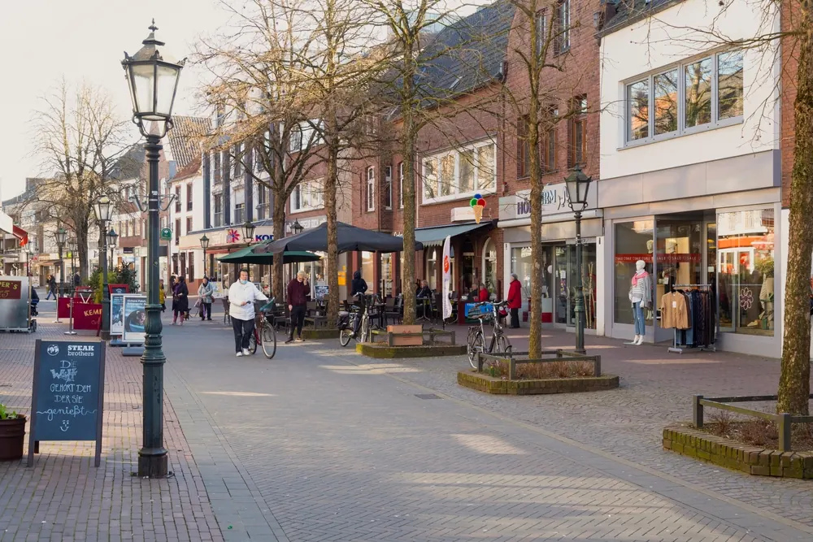
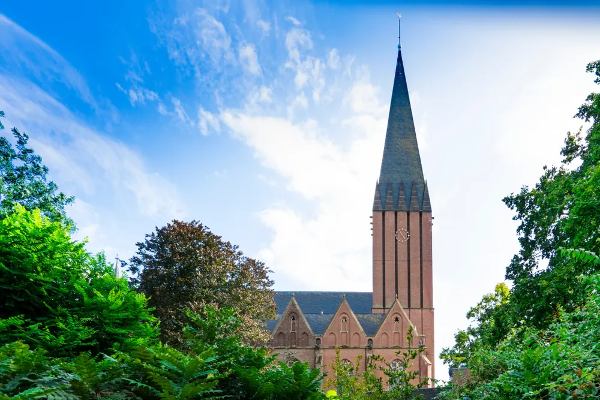
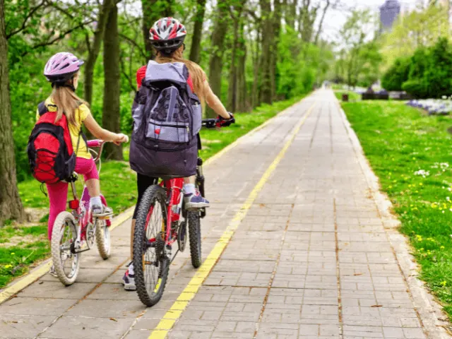

Bestemming bij Nijmegen
Goch
Een Duitse parel vlakbij Nijmegen. Ontdek historische charme, cultuur en natuur in dit schilderachtige stadje net over de grens.


Goch is een stad en gemeente in Duitsland, dichtbij de Duits-Nederlandse grens. De stad ligt in de regio Kleveen het recreatiegebied Reichswald, en ligt slechts 30 minuten rijden van Nijmegen (via de A73).
Goch is een betoverend stadje gelegen net over de Duitse grens van Nijmegen. Deze historische plek is rijk aan cultuur en biedt bezoekers een diepgaand inzicht in de rijke geschiedenis van het Rijnland. Een van de blikvangers is de imposante St. Arnold-Janssen-Kirche, die met haar prachtige architectuur boven de stad uitsteekt. Voor natuurliefhebbers is het nabijgelegen Naturpark de Maas-Schwalm-Nette een must-visit, waar men kan wandelen door dichte bossen en langs sprankelende meren. Het stadscentrum van Goch, met zijn pittoreske marktplein en charmante winkeltjes, nodigt uit tot een ontspannen middagje struinen.
Historie Goch
Het historische Goch, gelegen aan de Duitse grens, kent een rijke geschiedenis die teruggaat tot de 13e eeuw toen het stadsrechten verwierf binnen het graafschap Gelre. Zoals Gennep, ligt Goch aan de rivier de Niers, waar de iconische “Susmühle” in het stadscentrum een verhaal vertelt van de vele molens die hier ooit stonden. Ondanks de verwoestingen aan het einde van de Tweede Wereldoorlog, waarbij slechts 20% van de gebouwen overbleef, zijn er nog steeds juweeltjes zoals de Steenpoort en de Evangelische Kirche. Goch is sinds 2005 erkend als een bedevaartsoord, een eerbetoon aan Arnold Janssen, die nabij Venlo meerdere missiekloosters oprichtte.
Het is opvallend hoe vloeiend de grens tussen Nederland en Duitsland aanvoelt in Goch. De familienamen en dialecten van de inwoners vertonen veel gelijkenissen. Deze grens, vastgesteld in 1815 tijdens het Weens Congres, ligt symbolisch ‘een kanonschot’ van de Maas vandaan.
Ontdek Goch op de fiets
Goch is een stad doordrenkt van geschiedenis, waarvan de sporen duidelijk zichtbaar zijn in het stadscentrum.
Een aanrader is een fietstocht naar het 13e-eeuwse Klooster Graefenthal, net buiten Goch.
Dit voormalige klooster bevindt zich nabij het Reichswald, omringd door een uitgebreid netwerk van wandel- en fietsroutes. Aan de rand van een schilderachtig meertje, slechts 5 km van Goch, ligt dit historische juweel. Het klooster en zijn bijgebouwen staan nog fier overeind. Vandaag de dag fungeert het als evenementenlocatie en is er een gezellig café gevestigd.
Bezoekers kunnen in het weekend genieten van het kloostercafé. Het kloosterterrein staat open voor bezoekers. Locatie: Maasstrasse 48-50, Goch.

Winkelen in Goch
In Goch vind je ook gezellige winkelmogelijkheden. Voor vegetariërs en veganisten is het hier een waar paradijs. Supermarkten zoals Kaufland en Lidl hebben een uitgebreid aanbod aan vegetarische en veganistische producten. Vanuit Nijmegen ben je in slechts een half uurtje in de Vosstraße in Goch, perfect voor een uitstapje en je boodschappen. Naast deze winkels zijn er nog meer winkels die je vast en zeker aanspreken:
- Kaufland Goch
- LIDL Goch
- Gechenkehaus Peters
- Supermarkt Aldi Goch
- Willert Wolle
- Supermarkt Edeka Goch
- Netto supermarkt Goch
Ontspannen bij GochNess
GochNess is een veelzijdig recreatiecomplex gelegen in Goch, dichtbij de Nederlandse grens. Dit complex biedt een scala aan activiteiten voor zowel lokale inwoners als bezoekers uit de omgeving. Een van de hoogtepunten is het zwembad, dat niet alleen een gewone zwemfaciliteit biedt, maar ook een sauna en wellnessgedeelte voor wie op zoek is naar ontspanning. Daarnaast beschikt GochNess over een prachtig aangelegd meer, ideaal voor diverse watersporten of gewoon om te genieten van de natuurlijke omgeving. Of je nu komt voor actieve recreatie of ontspanning, GochNess heeft voor elk wat wils.
Lees ook

Zin in zee of stad? 3x perfecte uitstapjes buiten Nijmegen
Soms is het heerlijk om even de stad uit te gaan en een dag of weekend iets nieuws te ontdekken. Vanuit Nijmegen ben je in no time aan zee, in een…

3x een leuke Bed and Breakfast in Wijchen
De meest opvallende oude bezienswaardigheid in Wijchen is het centraal gelegen Kasteel van Wijchen, dat voor het eerst genoemd wordt in archiefstukken uit…

Op vakantie dichtbij huis: drie heerlijke vakantieparken vlakbij Nijmegen
Blijf je tijdens de vakantie graag dichtbij huis, maar wil je wel het gevoel hebben dat je er heerlijk tussenuit bent geweest? In de omgeving van Nijmegen…